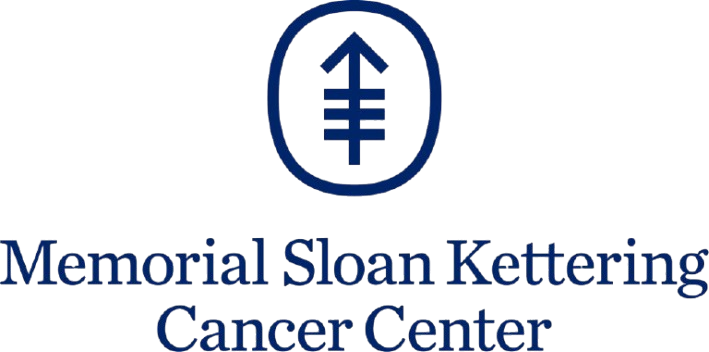
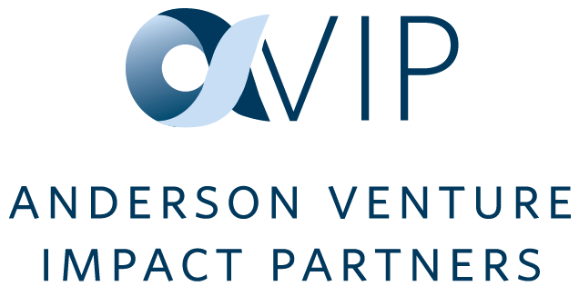
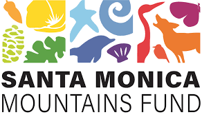

Causes I show up for.
Building paths to care for the people most often left out — through fundraising, board service, and the slow work of pulling resources toward research that doesn't get headline attention.
Supporting organizations working on food access, housing stability, and economic mobility — and learning from the people closer to the work than I am.
Advocacy and resource support for immigrant communities — legal aid, language access, and the everyday infrastructure people need to be safe and seen.
Showing up for reproductive autonomy and the clinics, advocates, and patients working to protect it — quietly, consistently, where it counts.
Mentorship, scholarship support, and the long work of opening doors — for first-generation students and the leaders coming up behind.
Where I volunteer.



Memorial Scholarship
Notes from the work.
A reflection on the people, organizations, and small acts of service that shaped my year — from environmental restoration and food access to education equity and cancer research. A reminder that meaningful change is built through collective action.
Notes on the Anderson Venture Capital Impact Partners program — what we look for, how we evaluate impact, and what I've learned from the founders we've met so far.